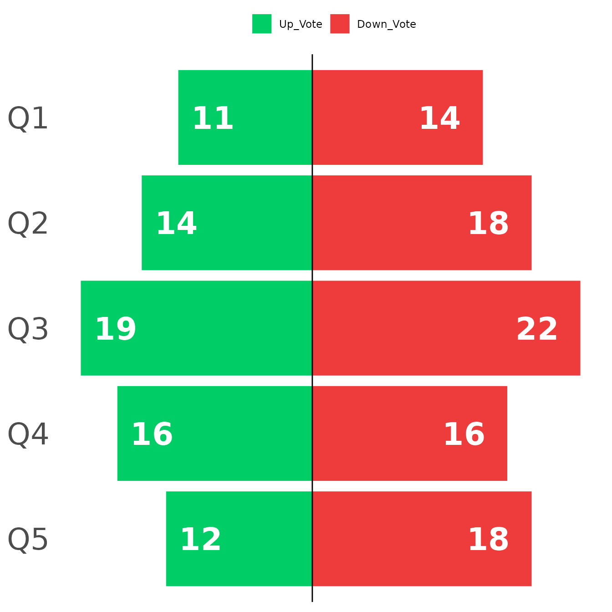

The purpose of this vignette is to:
- Explain what Heartbeat Analysis is.
- Briefly explain the function in this package, heartbeat().
- Provide a sample on how to report results.
Heartbeat Analysis
What is Heartbeat Analysis?
Heartbeat Analysis is a novel method of measuring sentiment developed by Christopher Patton and Justin Purl, gauging when respondents feel strongly one way or the other about a particular item. The basic premise is that individuals have a “baseline” or typical response style when filling out sentiment surveys that may or may not be the implied neutral response (e.g., “neither agree nor disagree”). This means that an individual may fill out most responses as “Agree” (4), yet not actually feel too strongly about the item. Using within-group comparisons, one can establish the respondent’s typical response pattern and then judge when a response exceeds their own neutral response.
The name “heartbeat” comes from how one may visualize this process across an individual’s responses. Think of the stereotypical image we have of a heartbeat monitor, with a baseline followed by ups and downs according to one’s pulse. In this case, the departures from the baseline, spiking up or down, are instances of strong sentiment towards the item in question.
How is it calculated?
The basic idea is to standardize an individual’s responses based upon their own mean and standard deviation. With a pre-established threshold of what constitutes strong sentiment, represented in the function as threshold, one can then establish when a response greatly exceeds their own typical response. The calculations for each component are listed below:
- Individual Mean: \[\bar{X} = \frac{\sum_{i=1}^{n} x_{i}}{n}\]
- Individual Standard Deviation: \[s = \sqrt{\frac{\sum (x_{i} - \bar{x})^{2}}{N - 1}}\]
- Heartbeat Score (type = “standard”): \[H_{i} = \frac{x_{i} - \bar{X}} s\]
- Up-Vote: \[H_{i} > threshold\]
- Down-vote: \[H_{i} < -threshold\]
- Neutral: \[H_{i} < threshold\] \[and\] \[H_{i} > threshold\]
- Controversy Score: \[\frac{(Up+Down)-\left\lvert(Up - Down)\right\rvert}{Neutral}\]
Why use Heartbeat Analysis?
One question that may arise is why use Heartbeat Analysis instead of other common measures of sentiment, such as net-agrees? It is important to start by pointing out these two analyses are not mutually exclusive. In fact, I highly encourage using both when reporting results. That being said, what Heartbeat Analysis shows is slightly different, in that it uncovers intensity of sentiment within individuals rather than broad sentiment between individuals. In this case, you are muting differences in individual response patterns to capture when the individual feels strongly about an item according to their own baseline.
Heartbeat Package Explanation
The package itself is relatively simple to use, consisting of a single function, heartbeat(). What it does is essentially convert a data frame into the results of a heart beat analysis, specifically the amount of Up-Votes, Down-votes, and Neutral-Votes as either a count or proportion for each item. In this section, I will briefly give a walkthrough of the function.
Example Data
# For the purpose of this vignette, I will create a reproducible data.frame
set.seed(43)
n <- 30
y <- 100
Climate <- data.frame()
for (i in 1:n){
x <- data.frame(sample(1:5, y, replace = TRUE, prob = c(0.1, 0.2, 0.4, 0.2, 0.1)))
colnames(x) <- paste0("Q",i)
Climate[1:y,i] <- x
}
Climate[1:5,1:5]
#> Q1 Q2 Q3 Q4 Q5
#> 1 2 4 3 4 3
#> 2 1 4 2 1 3
#> 3 3 4 2 4 4
#> 4 4 2 2 4 3
#> 5 3 2 3 3 3A few things to take note of:
- Heartbeat Analysis is a within group statistic. This means that what is important for “sample size” is the number of test items. In this example, I have set
n <- 30to designate 30 test items. - The function will check to make sure that the object being passed is a data frame with numeric variables and try to coerce the object if not. This may result in producing NA’s through coercion which will be removed in subsequent analyses. If eliminating NA’s is an issue, make sure the data frame being passed in contains only numeric variables.
Function Walkthrough
# This would be the same as heartbeat(Climate, type = "counts", threshold = 1, props = FALSE, controversial = TRUE)
HB <- heartbeat(Climate)
HB[1:5,]
#> Item Down_Vote Neutral Up_Vote Controversial
#> 1 Q1 14 75 11 0.2933333
#> 2 Q2 18 68 14 0.4117647
#> 3 Q3 22 59 19 0.6440678
#> 4 Q4 16 68 16 0.4705882
#> 5 Q5 18 70 12 0.3428571
# Using threshold argument, notice that lowering threshold increases instances of up/down votes.
HB <- heartbeat(Climate, threshold = .5)
HB[1:5,]
#> Item Down_Vote Neutral Up_Vote Controversial
#> 1 Q1 30 45 25 1.111111
#> 2 Q2 33 38 29 1.526316
#> 3 Q3 31 39 30 1.538462
#> 4 Q4 31 38 31 1.631579
#> 5 Q5 28 44 28 1.272727
# Using type argument.
HB <- heartbeat(Climate, type = "votes")
HB[1,1:10]
#> Q1 Q2 Q3 Q4 Q5 Q6 Q7 Q8 Q9 Q10
#> 1 0 0 0 0 0 0 0 1 1 -1
# Using props argument (Default = False, only works with type = "count")
HB <- heartbeat(Climate, props = TRUE)
HB[1,]
#> Item Down_Vote Neutral Up_Vote Controversial
#> 1 Q1 0.14 0.75 0.11 0.2933333
# Using controversial argument (Default = TRUE, only works with type = "count")
HB <- heartbeat(Climate, controversial = TRUE)
HB[1,]
#> Item Down_Vote Neutral Up_Vote Controversial
#> 1 Q1 14 75 11 0.2933333Sample Visuaizations
For the final section, I’ll give a quick example of how one may present the data. Keep in mind that there is quite a bit of freedom in how one chooses to do so and I personally would suggest presenting it in a similar fashion as however one chooses to present other descriptive data, like net agrees. For this demonstration, I’ll be using ggplot2.
library(dplyr)
library(tidyr)
library(ggplot2)
# I recommend installing "tidyverse" if not done so already, which has these packages and other useful packages grouped in one convenient location.
#Selecting the data we will be charting. In general, I wouldn't advise charting all items in a single plot when presenting data in this manner.
Climate <- heartbeat(Climate)
Climate <- Climate[1:5,c(1,2,4)] %>%
pivot_longer(!Item, names_to = "Vote", values_to = "Count")
# Method of preparing data for a divergent chart.
Climate_Divergent <- Climate %>%
mutate(Count_Divergent = if_else(Vote %in% c("Down_Vote"), Count, -Count))
Climate_Divergent <- mutate(Climate_Divergent, Item = factor(Item, levels = unique(Item))) %>%
mutate(Climate_Divergent, Vote = factor(Vote, levels = c("Up_Vote", "Down_Vote")))
Climate_Divergent %>%
ggplot(aes(x=reorder(Item, desc(Item)), y=Count_Divergent, fill=Vote, label=Count))+
geom_bar(stat="identity",position="identity")+
scale_fill_manual(values = c("springgreen3","brown2"), name="")+
coord_flip()+
geom_hline(yintercept=0) +
geom_text(color = "white",
fontface = "bold",
size = 9,
hjust = ifelse(Climate_Divergent$Count_Divergent < 0, -.3, 1.5) # move labels independently
) +
theme_minimal() +
theme(axis.text.x = element_blank(),
axis.title.x = element_blank(),
axis.title.y = element_blank(),
axis.text.y = element_text(size = 25),
panel.grid = element_blank(),
legend.position = "top") 